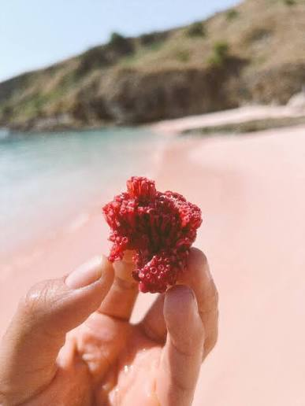
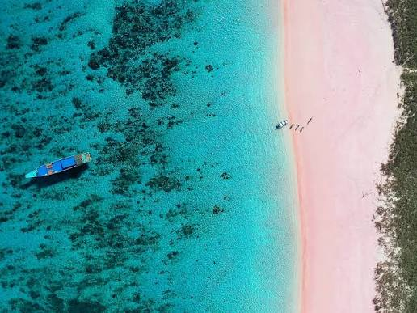
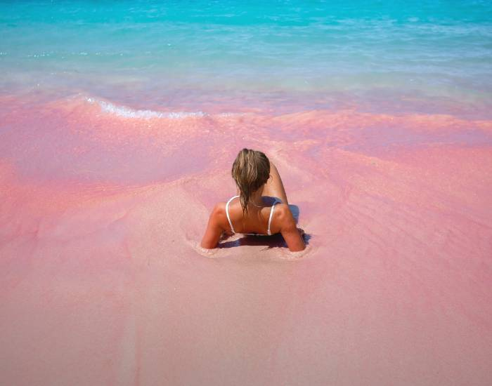

Ringkasan
Etika Kunjungan
Ulasan (1.204)
06:00–17:00Jam terbaik berkunjung
1–2 jamDurasi rata-rata
TenangKondisi laut hari ini
Tentang Pink Beach
Salah satu dari sedikit pantai berpasir merah muda di dunia, warnanya berasal dari organisme mikroskopis Foraminifera yang bercampur dengan pasir putih. Cocok untuk snorkeling dangkal dengan terumbu karang yang masih terjaga di area Taman Nasional Komodo.



Destinasi terkait

Padar Island

Pulau Komodo